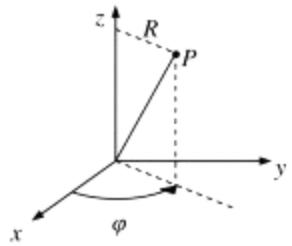

For axisymmetric three-dimensional flow in cylindrical polar coordinates ,
all the streamlines lie in \( \varphi = \text{constant} \) planes that contain the \( z \)-axis so \( \chi = -\varphi \) is one of the stream functions.
This produces \( \nabla \chi = -R^{-1} \mathbf{e}_\varphi \) and \( \rho \mathbf{u} = \rho (u_R, u_z) = -R^{-1} \mathbf{e}_\varphi \times \nabla \psi \), or
\[
\rho u_R = -R^{-1} \left( \frac{\partial \psi}{\partial z} \right), \quad \rho u_z = R^{-1} \left( \frac{\partial \psi}{\partial R} \right)
\]
If the density is constant, mass conservation reduces to \( \nabla \cdot \mathbf{u} = 0 \) (steady or not) and the entire preceding discussion follows for \( \mathbf{u} \) rather than \( \rho \mathbf{u} \) with the interpretation of stream function values in terms of volumetric flux rather than mass flux
◀
▶